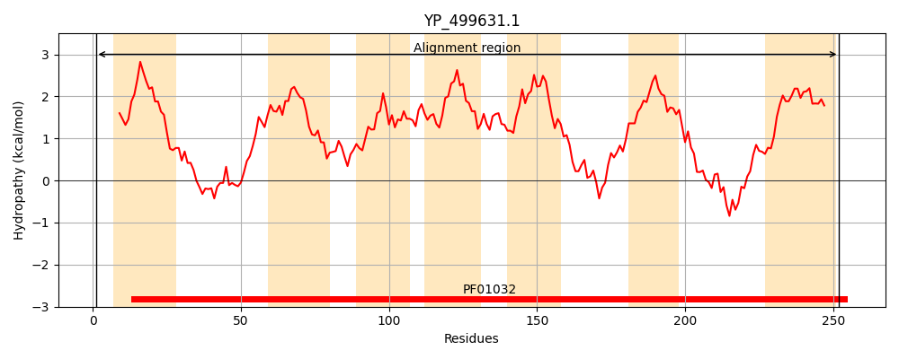
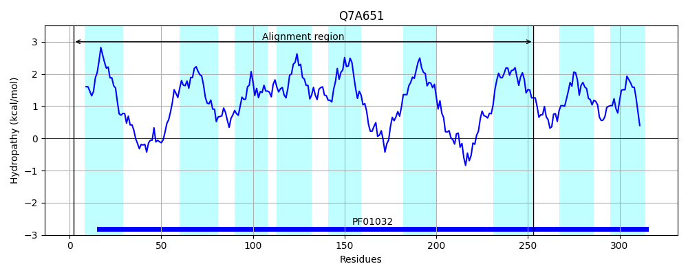
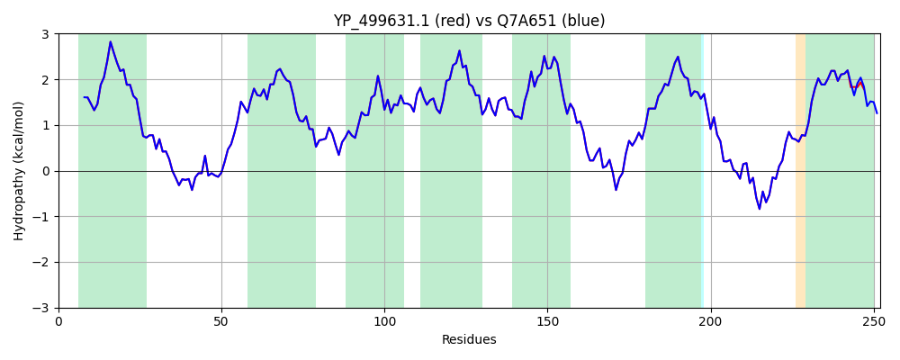

Hit Accession: Q7A651
Hit TCID: 3.A.1.14.17
Hit Description: gnl|BL_ORD_ID|15373 gnl|TC-DB|Q7A651|3.A.1.14.17 IsdF protein - Staphylococcus aureus (strain N315).
Mach Len: 252
e:0.000000
Query TMS Count : 7
Hit TMS Count: 9
TMS-Overlap Score: 7.100000
Predicted Substrates:CHEBI:5651;ferroheme b
BLAST Alignment:
Score: 1219 , Bit scores: 474 bits, E-value: 5.5e-171, Alignment length: 252, Percentage identity: 100
Query: 1 MIKNKKKLLFLCLLVILIATAYISFVTGTIKLSFNDLFTKFTTGSNEAVDSIIDLRLPRILIALMVGAMLAVSGALLQAALQNPLAEANIIGVSSGALIMRALCMLFIPQLYFYLPLLSFIGGLIPFLIIILLHSKFRFNAVSMILVGVALFVLLNGVLEILTQNPLMKIPQGLTMKIWSDVYILAVSALLGLILTLLLSPKLNLLNLDDIQARSIGFNIDRYRWLTGLLAVFLASATVAIVGQLAFLGIIV 252
MIKNKKKLLFLCLLVILIATAYISFVTGTIKLSFNDLFTKFTTGSNEAVDSIIDLRLPRILIALMVGAMLAVSGALLQAALQNPLAEANIIGVSSGALIMRALCMLFIPQLYFYLPLLSFIGGLIPFLIIILLHSKFRFNAVSMILVGVALFVLLNGVLEILTQNPLMKIPQGLTMKIWSDVYILAVSALLGLILTLLLSPKLNLLNLDDIQARSIGFNIDRYRWLTGLLAVFLASATVAIVGQLAFLGIIV
Sbjct: 2 MIKNKKKLLFLCLLVILIATAYISFVTGTIKLSFNDLFTKFTTGSNEAVDSIIDLRLPRILIALMVGAMLAVSGALLQAALQNPLAEANIIGVSSGALIMRALCMLFIPQLYFYLPLLSFIGGLIPFLIIILLHSKFRFNAVSMILVGVALFVLLNGVLEILTQNPLMKIPQGLTMKIWSDVYILAVSALLGLILTLLLSPKLNLLNLDDIQARSIGFNIDRYRWLTGLLAVFLASATVAIVGQLAFLGIIV 253 | Protein Hydropathy Plots: |
|---|
|  |  |
Pairwise Alignment-Hydropathy Plot:
|
|---|
|  |